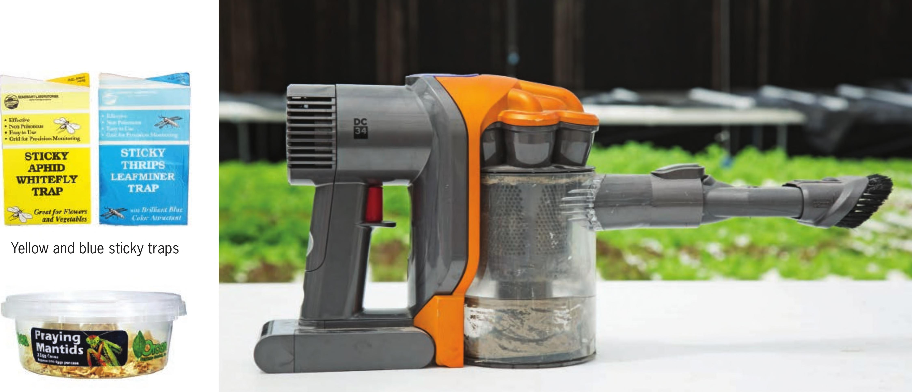

Praying mantis eggs Small portable vacuum often solely use organic pesticides because they are very effective. Most of the conventional pesticides available to gardeners are just as safe as organic pesticides when used properly. Pest-Management Tools This is by no means a comprehensive list of pest-management tools, just a few of my favorite methods for managing pests in my garden. Vacuum This is a pesticide-free method of removing insects. Sticky Traps Yellow sticky traps are generally used to trap and monitor aphids, whiteflies, and fungus gnats. Blue sticky traps are generally used to trap and monitor thrips. Beneficial Insects Successfully managing pests with natural predators can be tricky. There are many beneficial insect options; the following are a few of the most commonly used predators in home hydroponic gardens. Grow room climate and the presence of spray residues can impact the effectiveness of beneficial insects. • Lacewing [Chrysoperla carnea}-. Primarily used to control aphids but also may be effective for controlling whiteflies and thrips. • Ladybug ( Coccinella septempunctata ): Used to control aphids. • Praying mantis [Tenodera sinensis}-. Eats a wide range of insects, including aphids. • Predatory mite [Neoseiulus cucumeris}-. Used to control thrips and spider mites. • Swirski mite [Amblyseius swirskii}: Used to control thrips. Essential Oils Essential oils can be very effective for killing or repelling pests like mites, thrips, and aphids. A few of the more commonly used essential oils are garlic, clove, mint, thyme, rosemary, and cinnamon. Neem Oil An organic pesticide derived from the neem tree, this oil can repel insects and potentially kill them if applied directly onto the pest. EQUIPMENT 33
